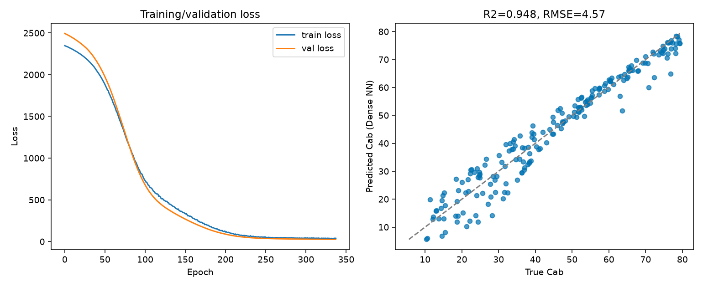

14. Deep-Learning Inversion
What you will learn
The full deep-learning inversion workflow, with every preprocessing step made explicit – nothing hidden inside a function call.
What normalization does, why it’s needed, and why it must be fitted on training data only.
What epochs, batches, optimizer, validation, and early stopping each actually control.
Concept
Deep learning solves the same problem as 13. Machine-Learning Inversion
(predict a trait from a spectrum) with a neural network instead of a
classical estimator. get_ml_model() offers
two architectures: a dense (fully-connected) network, and a 1D
convolutional network (CNN) that treats predictor bands in spectral
order – useful when predictors are many contiguous hyperspectral
bands, since nearby-band structure is then something the network can
actually exploit (a dense network sees predictors as an unordered set;
a 1D-CNN sees them as a sequence).
Python tools used
Function |
Key arguments |
|---|---|
|
What happens inside, step by step
Predictors and target: every column of
datasetexceptdep_varis used as a predictor – if your LUT has a trait column you don’t want the network to see (e.g. a second trait, or a soil parameter), drop it before calling.Train/validation split:
prop_split=(0.8, 0.2)splits before anything else touches the data.Normalization: predictors are standardized (
StandardScaler().fit(X_train)) – each predictor rescaled to zero mean, unit variance. Neural networks train far more reliably on inputs of comparable scale; without it, a predictor with naturally larger raw values can dominate early gradients for no physically meaningful reason.Why train-only: the scaler is fit on
X_trainonly, then applied (never refit) to the validation set. Fitting on the full dataset would leak validation-set statistics (its mean/variance) into training – a subtle form of data leakage that inflates validation performance relative to what the model would do on genuinely new data.Epochs / batch size:
n_epochsis a ceiling on training passes over the data;batch_sizeis how many rows are averaged per gradient update. Larger batches give smoother but less frequent updates.Optimizer: controls how weights are updated from the computed gradient (
"adam"here – an adaptive per-weight learning rate, the most common default).Validation + early stopping: validation loss is tracked every epoch; training stops once it stops improving for a few consecutive epochs (patience-based), and the best epoch’s weights are restored – not necessarily the last epoch’s.
Run the example
import numpy as np
import pandas as pd
from sklearn.model_selection import train_test_split
from toolsrtm.deep_learning import get_ml_model
# lut_df: the same 1000-row LUT from t11-lut-generation (Cab, LAI + 10 bands)
result = get_ml_model(lut_df, dep_var="Cab", model="Hidden-layers",
n_epochs=500, n_times=3, seed=2)
print("Held-out R2:", result.stats["r2"])
print("Held-out RMSE:", result.stats["rmse"])
print("Epochs actually run:", len(result.history["loss"]), "of 500 requested")
# Applying the fitted scaler to new data -- required before predicting
predictor_cols = [c for c in lut_df.columns if c != "Cab"]
X = lut_df[predictor_cols].to_numpy(dtype=float)
y = lut_df["Cab"].to_numpy(dtype=float)
X_train, X_val, y_train, y_val = train_test_split(X, y, test_size=0.2, random_state=2)
X_val_scaled = result.x_scaler.transform(X_val)
pred_val = result.model.predict(X_val_scaled, verbose=0).ravel()
Result
Printed output (from an actual run – Keras’ own internal stochasticity means your exact loss values may differ slightly, but the shape and final R2/RMSE will match closely):
Held-out R2: 0.946762574572728
Held-out RMSE: 4.565467911050133
Epochs actually run: 339 of 500 requested
{kind=link}

Real output: training/validation loss over 339 epochs (left – early stopping triggered well before the 500-epoch ceiling, and train/val loss track closely throughout, no overfitting gap), and predicted vs. true Cab on the held-out validation set (right, R2=0.948).
Interpretation
This is a genuinely successful fit: R2=0.95, and the loss curve shows the textbook healthy pattern – both train and validation loss decrease together and plateau at nearly the same value, with no widening gap that would signal overfitting. Early stopping triggered at epoch 339, well short of the 500-epoch ceiling – the network had already converged, and training further would mostly add compute time, not accuracy. The scatter plot’s remaining spread (points off the 1:1 line, mostly at low-to-mid Cab) reflects genuine irreducible noise/ambiguity in a 10-band multispectral retrieval problem, not a training failure – compare against 12. LUT Inversion/13. Machine-Learning Inversion’s own R2 on the same underlying problem for context.
Try it yourself
Predict on
X_valwithout applyingresult.x_scalerfirst (raw reflectance straight intoresult.model.predict) and see how badly R2 collapses – this is the exact scaling bug documented and fixed in ToolsRTM Tutorial 13, reproduced here deliberately so you can see its effect firsthand.Try
model="CNN"on a wider, contiguous hyperspectral band set (e.g. every 10nm from 450-2390nm) instead of 10 scattered multispectral bands, and compare R2 against the dense network here.Reduce
n_epochsto 50 (well below where early stopping triggered above) and check how much worse (higher loss, lower R2) the under-trained result is.
Common mistakes
Forgetting to apply
result.x_scalerbefore predicting on new data is the single most common way to get silently wrong DL predictions – see “Try it yourself” above to see it happen on purpose.n_epochsis a ceiling, not a guarantee – checkinglen(result.history["loss"])(as done above) tells you how many epochs actually ran before early stopping.A relu activation on the final output layer of a regression network can get permanently stuck at 0 (a dead-gradient failure mode) –
get_ml_modelalready uses a linear output activation specifically to avoid this (see the function’s own source comment), but it’s worth knowing if you ever build a custom architecture by hand.
Next
15. Choosing an Inversion Strategy – LUT matching vs. ML vs. DL, compared directly, and when each is the right choice.
Using R? -> ToolsRTM Tutorial 13: Deep-Learning Inversion